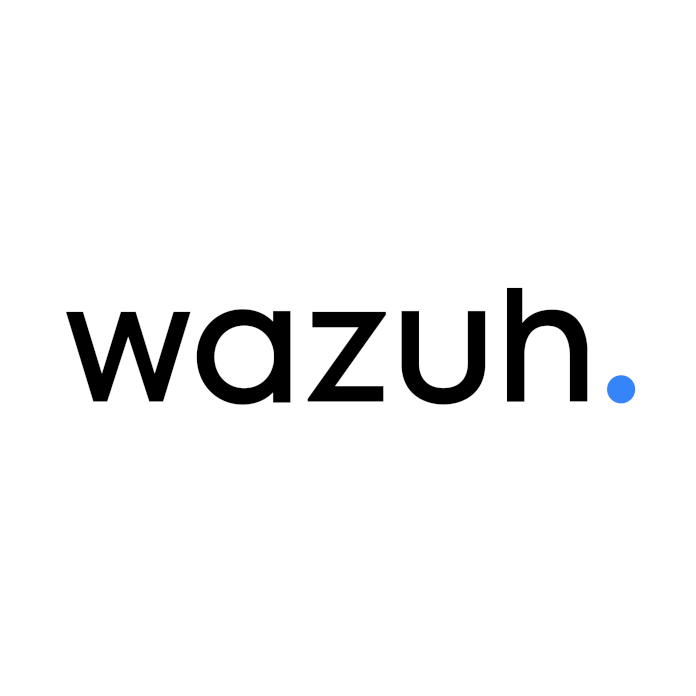

Threat hunting
Pesquisa e correlação de eventos para encontrar comportamentos suspeitos e sinais de comprometimento.
SIEM e XDR gerenciado
A Upport implanta e opera o Wazuh para centralizar eventos, detectar ameaças e dar visibilidade contínua sobre endpoints, servidores e nuvem.

Wazuh gerenciadoImplantado e acompanhado pela Upport
Visibilidade centralizada
O Wazuh reúne telemetria e alertas em um único lugar. A Upport cuida da implantação, das regras, dos agentes e da rotina de acompanhamento.
Pesquisa e correlação de eventos para encontrar comportamentos suspeitos e sinais de comprometimento.
Identificação contínua de falhas conhecidas em sistemas operacionais e aplicações monitoradas.
Alertas sobre criação, alteração ou exclusão de arquivos críticos em servidores e estações.
Monitoramento de Windows, Linux, macOS, workloads em nuvem e ambientes locais ou híbridos.
Eventos relacionados a táticas e técnicas conhecidas para facilitar análise e priorização.
Visões e evidências para apoiar controles como PCI DSS, LGPD, NIST e políticas internas.
Operação gerenciada
A plataforma coleta os sinais. A Upport transforma alertas em uma rotina organizada de análise, comunicação e ação.
Agentes e integrações enviam eventos de endpoints, servidores, aplicações e nuvem.
Regras transformam grandes volumes de logs em alertas relevantes para o ambiente.
Severidade, ativo afetado e contexto ajudam a separar ruído de risco real.
Ações, responsáveis e evidências ficam organizados para reduzir o tempo de reação.
Da implantação à rotina
Desenhamos a cobertura conforme os ativos e riscos da empresa. Depois, mantemos a plataforma atualizada e conectada à operação de TI.
Conhecer TI gerenciada →Servidor, indexador, dashboard, certificados, retenção e agentes dimensionados para o cenário.
Ajustes para reduzir ruído, priorizar ativos críticos e integrar fontes importantes de eventos.
Indicadores de cobertura, alertas, vulnerabilidades e próximos passos para a segurança.
Comece pela visibilidade
Mapeamos o ambiente e mostramos como uma operação de SIEM pode proteger o que não pode parar.